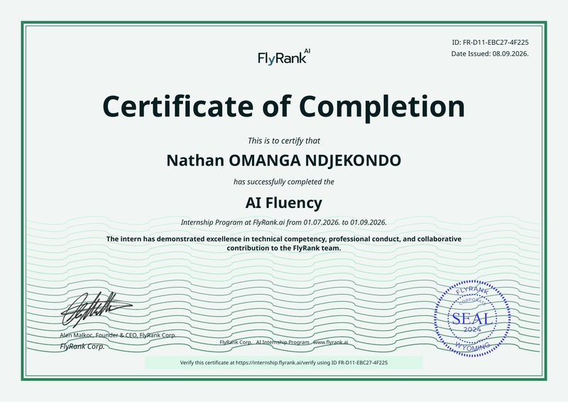
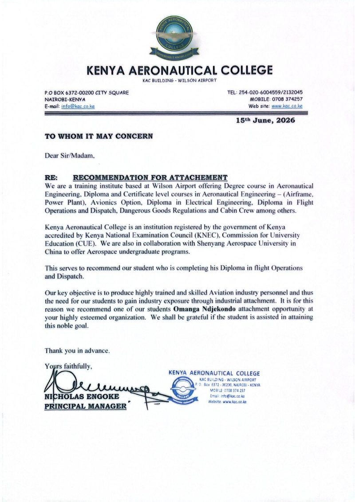
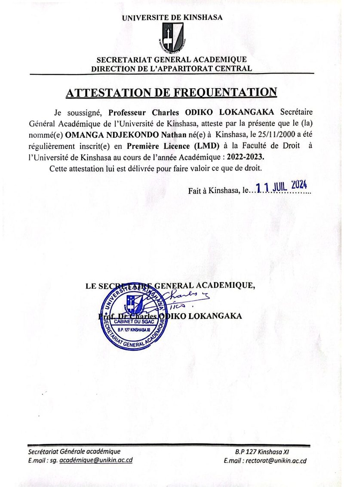

Certificates
Certificates & Credentials
Formal training and internship certifications, ordered from most to least recently obtained. The Flight Operations/Dispatch diploma and certificate have both been successfully completed — the physical documents are pending delivery from Kenya Aeronautical College.

FlyRank Corp. · Sep 2026
General AI Fluency Internship — Certificate of Completion
Completed the AI Fluency Internship Program at FlyRank (Jul–Sep 2026), applying AI tools to real aviation dispatch tasks and culminating in the AI-Powered NOTAM/METAR/TAF Briefing Assistant capstone.
View Certificate
Kenya Aeronautical College · May – Jul 2026
Diploma in Flight Operations / Dispatch
Advanced diploma building on the certificate program, covering operational decision-making and dispatch procedures. Coursework and exams successfully completed. Physical diploma pending delivery — recommendation letter available below.
View Recommendation LetterKenya Aeronautical College · Sep 2025 – Mar 2026
Certificate in Flight Operations / Dispatch
Training in flight planning, METAR/TAF interpretation, NOTAM analysis, and ICAO regulatory compliance. Successfully completed. Physical certificate pending delivery — recommendation letter available below.
View Recommendation Letter
University of Kinshasa, DRC · 2022–2023
Attestation de Fréquentation — First Year, Law Degree (LMD)
Official attestation confirming enrollment and completion of the first year of the Law Degree (LMD) program, Faculty of Law, University of Kinshasa, academic year 2022–2023.
View CertificateMinistry of Primary, Secondary & Vocational Education, DRC · Jul 2019
Diplôme d'État — Scientific Section, Chemistry-Biology Option
State diploma for the completion of long-cycle secondary studies, scientific section with a chemistry-biology specialization, awarded in Kinshasa.
View CertificateMinistry of Primary, Secondary & Vocational Education, DRC · Jul 2013
Certificat de Fin d'Études Primaires
State certificate confirming completion of the primary education cycle, awarded in Kinshasa.
View Certificate